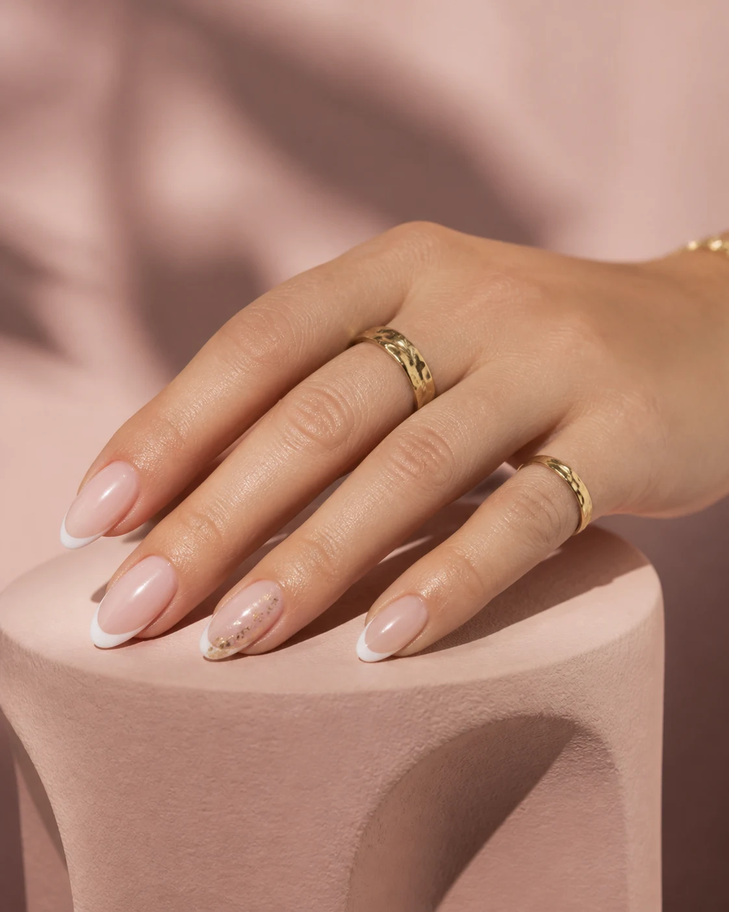

JOUW NAGELSTUDIO IN SOEST
Mooi tot in
de vingertoppen.
Van subtiel naturel tot uitgesproken nail art. Ontdek de look die bij jou past.
Een klein moment.
Een mooi verschil.
Een frisse kleur, een nieuwe vorm of verzorgde voeten. Geef jouw stijl de aandacht die hij verdient.
Acryl & kunstnagels
Van naturel tot French, babyboom en cateyes. Kies jouw favoriete afwerking.
BIAB
Naturel roze, met gellak of een witte rand. Een verzorgde look in jouw stijl.
Manicure & pedicure
Aandacht voor handen én voeten. Met normale lak, gellak of zonder kleur.
Nail art & extra’s
Een subtiel steentje of een persoonlijk detail maakt jouw nagels helemaal af.
BEAUTY IS IN YOUR HANDS
Welke look past bij jou?
Laat je inspireren. Neem je favoriete idee mee en bespreek de mogelijkheden in de salon.

Soft & natural
Een subtiele finish, elke dag mooi.A touch of red
Een klassieke kleur met karakter.Jouw nagels.
Jouw stijl.
Jouw moment.
De sfeerbeelden zijn AI-gegenereerde inspiratie, geen foto’s van salonresultaten.
Een mooie look.
Een duidelijke prijs.
Alle behandelingen op een rij. Prijslijst geldig vanaf 1 juli 2026.
Goed om te weten
Extra lange acrylnagels (langer dan ½ nepnagel): €5 extra, zonder garantie. BIAB-verlenging: maximaal ¼ nepnagel; extra lang tot maximaal ¼ nepnagel: €5 extra.
Je krijgt 7 dagen garantie, mits de schade niet is ontstaan door eigen toedoen.
Voor je
langskomt.
Hoe maak ik een afspraak?
Bel ons op 06 2683 8387. Samen bespreken we je behandeling en een geschikt moment. Je afspraak is pas definitief na bevestiging door de salon.
Wat betekent ‘vanaf’ bij een prijs?
Dit is de startprijs van de genoemde behandeling. Extra lengte, nail art of steentjes kunnen een toeslag hebben. Bespreek je wensen en de uiteindelijke prijs vooraf in de salon.
Kan ik mijn nagels laten opvullen?
Voor verschillende acryl- en BIAB-behandelingen zijn opvulprijzen beschikbaar. Je vindt ze in de prijslijst onder ‘Opvullen’. Bel de salon als je twijfelt welke behandeling bij je huidige nagels past.
Zit er garantie op mijn nagels?
Je krijgt 7 dagen garantie, mits de schade niet is ontstaan door eigen toedoen. Voor extra lange acrylnagels (langer dan ½ nepnagel) geldt geen garantie.
Waar vind ik de salon?
Je vindt XS lus nails aan de Van Weedestraat 211, 3761 CD Soest. Open de route in Google Maps.
TOT SNEL BIJ XS LUS NAILS
Tijd voor
jouw moment.
We helpen je graag met een afspraak of vragen over een behandeling.
06 2683 8387 Van Weedestraat 2113761 CD SoestPlan je route ↗
Openingstijden
- Maandag
- 10:00 – 18:00
- Dinsdag
- 10:00 – 18:00
- Woensdag
- 10:00 – 18:00
- Donderdag
- 10:00 – 18:00
- Vrijdag
- 10:00 – 20:00
- Zaterdag
- 10:00 – 18:00
- Zondag
- Gesloten
Een afspraak maken? Bel ons tijdens openingstijden.